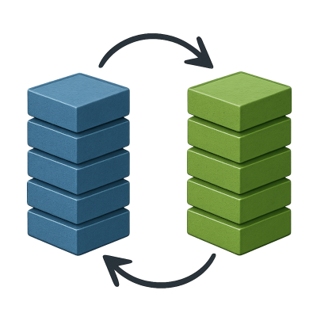

Blue/Green Deployments
Blue/Green deployment runs two stacks side-by-side: one live, one idle. You deploy to the idle stack, test it, and when ready, swap roles — giving near-zero downtime and easy rollback.

Blue/Green adds some complexity because where before there was just "the stack", now there is:
- A
bluestack - A
greenstack - A front proxy to direct traffic
- An external Postgres.
2. Adjust Caddy
Name the Caddy containers
Naming the Caddy containers blue_caddy and green_caddy allows the front
proxy to direct traffic to the correct stacks:
caddy:
container_name: ${STACK_NAME}_caddy
Remove exposed ports
We'll no longer expose ports in the stacks, instead a front proxy will sit in front of the two stacks, proxying to them.
So remove the caddy service's ports: section in compose.yaml.
Serve HTTP-only in the stacks
Set CADDY_SITE_ADDRESS to only :80, removing :443 (leaving TLS
termination to the front proxy):
caddy:
environment:
CADDY_SITE_ADDRESS: :80
2. Postgres
It's not advised to run two separate PostgreSQL instances and having them both simultaneously access the same shared volume.
So we need to move Postgres out of the compose file and start it separately.
Create a network:
docker network create shared
And add it to the Compose file:
networks:
shared:
name: shared
external: true
then in services that need db access:
networks:
- default
- shared
3. Volumes
To share data between the two stacks (uploads, etc.), give volumes explicit names:
volumes:
user_data:
name: user-data
4. Bring up two Stacks
Deploying is the same as before, but now we're deploying the
idle stack. For this example, green is idle so that's the one we're
deploying.
Create blue and green directories on the server and copy compose.yaml
into the idle stack's directory:
scp compose.yaml youruser@yourserver:green/compose.yaml
Shell into the server and bring up the idle stack:
cd green
docker compose pull
STACK_NAME=green docker compose up -d
Docker will use the directory name green as the project name, creating
different containers, volumes and networks than the blue stack.
5. Add a Front Proxy
The front proxy is a single container that binds ports 80 and 443 on the
server and routes requests into either the Blue or Green stack.
On the server, create a simple Caddyfile:
api.myapp.com {
reverse_proxy blue_caddy:80
}
Optionally, point a second hostname to the idle stack for testing.
The front proxy manages TLS, so give it a persistent volume for certificates:
docker volume create caddy_data
Start the proxy, attaching it to both networks – this requires both stacks to be up first, so the networks exist:
docker run -d \
--name front-proxy \
-p 80:80 -p 443:443 \
-v ./caddy:/etc/caddy \
-v caddy_data:/data \
--network blue_default \
--network green_default \
caddy:2
6. Upgrading
Flip traffic
Point traffic to the green stack:
api.myapp.com {
reverse_proxy green_caddy:80
}
Reload the front proxy's config:
docker exec front-proxy caddy reload
Cutover is instant. Green is now live, and Blue is the idle stack.
And rollback is simple: flip the Caddyfile back and caddy reload again.
Github Actions
Here's a workflow for B/G deploys:
Click to expand
name: Deploy
on:
push:
branches:
- main
jobs:
deploy:
runs-on: ubuntu-latest
steps:
- name: Checkout code
uses: actions/checkout@v4
- name: Start SSH agent
uses: webfactory/ssh-agent@v0.9.0
with:
ssh-private-key: ${{ secrets.VPS_SSH_KEY }}
- name: Get the idle stack
id: idle
run: |
ACTIVE=$(ssh -i ~/.ssh/id_rsa -o StrictHostKeyChecking=no \
${{ secrets.VPS_USER }}@${{ secrets.VPS_HOST }} \
'cat active_stack 2>/dev/null || echo blue')
if [ "$ACTIVE" = "blue" ]; then
echo "IDLE=green" >> $GITHUB_OUTPUT
else
echo "IDLE=blue" >> $GITHUB_OUTPUT
fi
echo "ACTIVE=$ACTIVE" >> $GITHUB_OUTPUT
- name: Copy compose.yaml to idle stack
uses: appleboy/scp-action@master
with:
host: ${{ secrets.VPS_HOST }}
username: ${{ secrets.VPS_USER }}
port: 22
key: ${{ secrets.VPS_SSH_KEY }}
source: "compose.yaml"
target: "${{ steps.idle.outputs.IDLE }}/"
- name: Deploy idle stack
uses: appleboy/ssh-action@v1.0.3
with:
host: ${{ secrets.VPS_HOST }}
username: ${{ secrets.VPS_USER }}
key: ${{ secrets.VPS_SSH_KEY }}
envs: GHCR_PAT
script: |
set -euo pipefail
echo "${{ steps.idle.outputs.ACTIVE }}" > active_stack
cd ${{ steps.idle.outputs.IDLE }}
echo "$GHCR_PAT" | docker login ghcr.io -u "${{ github.actor }}" --password-stdin
DOCKER_CLIENT_TIMEOUT=300 COMPOSE_HTTP_TIMEOUT=300 docker compose pull -q
STACK_NAME=${{ steps.idle.outputs.IDLE }} docker compose up -d
env:
GHCR_PAT: ${{ secrets.GHCR_PAT }}
- name: Flip traffic
uses: appleboy/ssh-action@v1.0.3
with:
host: ${{ secrets.VPS_HOST }}
username: ${{ secrets.VPS_USER }}
key: ${{ secrets.VPS_SSH_KEY }}
script: |
if [ "${{ steps.idle.outputs.IDLE }}" = "blue" ]; then
sed -i 's/green_caddy/blue_caddy/g' caddy/Caddyfile
else
sed -i 's/blue_caddy/green_caddy/g' caddy/Caddyfile
fi
docker exec front-proxy caddy reload --config /etc/caddy/Caddyfile
echo "${{ steps.idle.outputs.IDLE }}" > active_stack